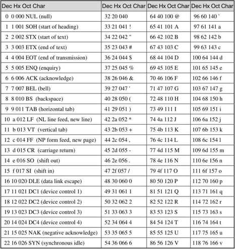
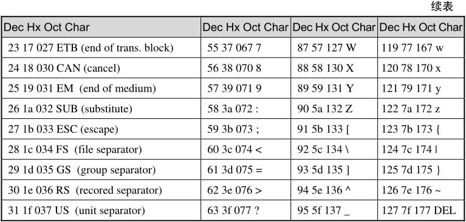
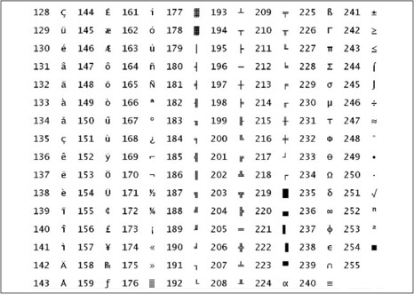
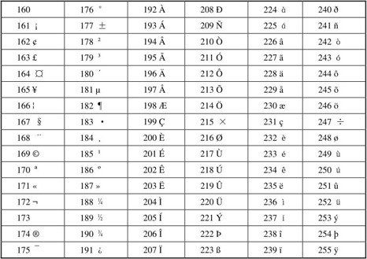
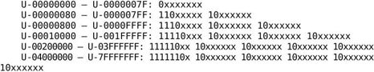
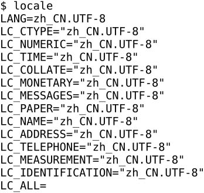
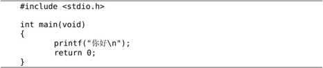
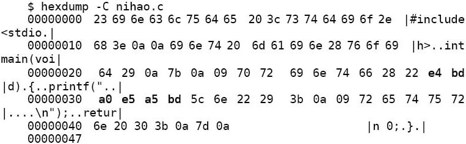
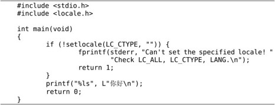
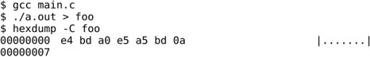

ASCII码的取值范围是0～127，可以用7个bit表示。C语言规定char型占一个字节，如果存放ASCII码则只用到低7位，高位为0。ASCII码表如表A.1所示。
表A.1 ASCII码表


绝大多数计算机的一个字节是8位，取值范围是0～255，而ASCII码并没有规定编号为128～255的字符，为了能用一个字节表示更多的字符，各厂商制定了很多种ASCII码的扩展规范。注意，虽然通常把这些规范称为扩展ASCII码（Extended ASCII），但其实它们并不属于ASCII码标准。例如下面这种扩展ASCII码由IBM制定，在字符终端下被广泛采用，其中包含了很多表格边线字符用来画界面，如图A.1所示。

图A.1 IBM的扩展ASCII码表
在图形界面下最广泛使用的扩展ASCII码是ISO-8859-1，也称为Latin-1，其中包含欧洲各国语言中最常用的非英文字母，但毕竟只扩展了128个字符，一些不常用的字母就没有包含进来。如表A.2所示。
表A.2 ISO-8859-1

编号128～159的是一些控制字符，在表A.2中没有列出。
为了统一全世界各国语言文字和专业领域符号（例如数学符号、乐谱符号）的编码，ISO制定了ISO 10646标准，也称为UCS（Universal Character Set）。UCS编码的长度是31位，可以表示231个字符。如果两个字符编码的高位相同，只有低16位不同，则它们属于同一个平面（Plane），所以一个平面由216个字符组成。目前绝大多数常用字符都位于第一个平面（编码范围是0x0000～0xFFFF），称为BMP（Basic Multilingual Plane）或Plane 0，为了向后兼容，其中编号为0～256的字符和ASCII码以及Latin-1相同。UCS编码通常用U-xxxxxxxx这种形式表示，而BMP的编码通常用U+xxxx这种形式表示，其中x是十六进制数字。在ISO制定UCS的同时，另一个厂商联合组织也在着手制定这样的编码，称为Unicode，后来两家联手制定统一的编码，但各自发布各自的标准文档，所以UCS编码和Unicode码是相同的。
有了字符编码，另一个问题就是这样的编码在计算机中怎么表示。现在已经不可能用一个字节表示一个字符了，最直接的想法就是用四个字节表示一个字符，这种表示方法称为UCS-4或UTF-32，UTF是Unicode Transformation Format的缩写。这样表示显然比较浪费存储空间，如果表示BMP字符，4个字节中的高两个字节都是0，如果表示ASCII或Latin-1字符，4个字节中的高3个字节都是0，而我们常用的绝大多数字符都在BMP、ASCII或Latin-1字符集中。
另一种比较节省存储空间的办法是用两个字节表示一个字符，称为UCS-2或UTF-16，这样只能表示BMP中的字符，但BMP中有一些控制字符用于扩展，可以用两个这样的控制字符表示其他平面的字符，称为Surrogate Pair。无论是UTF-32还是UTF-16都有一个更严重的问题是和C语言不兼容，在C语言中字节0表示字符串结尾，库函数strlen、strcpy等都依赖于这一点，如果字符串用UTF-32存储，其中有很多字节0并不表示字符串结尾，那就乱套了。
UNIX之父Ken Thompson提出的UTF-8编码很好地解决了这个问题，因此得到广泛应用。和UTF-16、UTF-32不同的是，UTF-8编码的长度不固定，每个字符用1～6个字节表示。UTF-8编码具有以下性质：
⦁ 编码为U+0000～U+007F的字符只占一个字节，就是0x00～0x7F，和ASCII码兼容。
⦁ 编码大于U+007F的字符用2～6个字节表示，每个字节的最高位都是1，而所有ASCII码的最高位都是0，因此非ASCII码字符的UTF-8编码中不会出现ASCII码的字节（也不会出现字节0）。
⦁ 在非ASCII码字符的多字节编码中，第一个字节的取值范围是0xC0～0xFD，根据第一个字节可以判断后面还有几个字节也属于当前字符的编码。后面每个字节的取值范围都是0x80～0xBF，见下面的详细说明。
⦁ 所有Unicode字符（共231个）都可以用UTF-8编码表示出来。
⦁ UTF-8编码最长6个字节，BMP字符的UTF-8编码最长三个字节。
⦁ 0xFE和0xFF这两个字节在UTF-8编码中不会出现。
具体来说，UTF-8编码有以下几种格式：

ASCII码字符的UTF-8编码只有一个字节（就是ASCII码本身），最高位是0。非ASCII码字符的第一个字节最高位是1，并且后面至少还要跟一个1，最高位后面跟几个1就表示后面还有几个字节也属于当前字符的编码，例如111110xx，最高位后面跟4个1，表示后面还有4个字节也属于当前字符的编码。后面每个字节的最高两位都是10，而第一个字节的最高两位要么是0x，要么是11，因此可以和后面的字节区分开。这样的设计有利于误码同步，例如在网络传输过程中丢失了几个字节，很容易判断当前字符是不完整的，也很容易找到下一个字符应该从哪儿开始，顶多丢掉一两个字符就可以同步了，而不会导致后面的解码过程全部错乱。上面的格式中标为x的位就是字符的Unicode码，最后一种6字节的格式中x位有31个，可以表示31位的Unicode码。UTF-8编码就像一列火车，第一个字节是车头，后面每个字节是车厢，其中承载的货物是Unicode码。UTF-8规定承载的Unicode码以大端表示，就是说第一个字节中的x位是Unicode码的高位，后面字节中的x位是Unicode码的低位。
例如U+00A9（©字符）的二进制是10101001，编码成UTF-8是1100001010101001（0xC20xA9），但不能编码成111000001000001010101001，UTF-8规定每个字符只能用尽可能少的字节来编码。
目前各种Linux发行版都支持UTF-8编码，在磁盘上保存一个含有非ASCII字符的文本文件，默认是以UTF-8编码的。当前系统的字符编码设置可以用locale命令查看：

Locale定义了语言、字符编码、国家地区、数字格式、货币格式等参数，详见locale(1)、locale(5)、locale(7)。locale命令列出的这些参数每一个都可以用环境变量单独设置，但通常这些参数的取值是一致的。在我的系统中只设置了环境变量LANG，其他参数没有设置，用locale命令可以看到其他Locale参数也继承了环境变量LANG的值。
常用汉字都位于BMP中，所以一个汉字的UTF-8编码通常是3个字节。例如编辑一个C程序：

源文件是以UTF-8编码存储的：

其中e4 bd a0这三个字节就是“你”的UTF-8编码，e5 a5 bd这三个字节就是“好”的UTF-8编码。把它编译成目标文件，"你好\n"这个字符串就成了这样一串字节：e4 bd a0 e5 a5 bd 0a 00，转义序列由两个字节变成一个字节，字符串末尾添了一个字节0，而汉字仍然占3个字节，在C标准中多字节编码的字符称为Multibyte Character。运行这个程序会把这一串字节输出到当前终端设备，如果当前终端能够识别UTF-8编码（比如图形界面的终端窗口）就能打印出汉字，如果不能识别UTF-8编码（比如一般的字符终端）就打印不出汉字。也就是说，在这个程序中识别汉字的工作既不是由C编译器做的也不是由printf函数做的，C编译器原封不动地把源文件中的UTF-8编码复制到目标文件中，printf函数再把这一串字节当做以Null结尾的字符串原封不动地输出到终端设备，识别汉字的工作是由终端设备做的。
仅有这种程度的汉字支持是不够的，有时候我们需要在C程序中操作字符串里的字符，比如求字符串"你好\n"中有几个汉字或字符，用strlen就不灵了，因为strlen求的是字节数而不是字符数。为了在程序中操作Unicode字符，C标准定义了宽字符（Wide Character）类型wchar_t。在字符常量或字符串字面值前面加一个L就表示宽字符常量或宽字符串，例如定义wchar_t c=L'你';，变量c的值就是汉字“你”的31位Unicode码，而L"你好\n"就相当于数组wchar_t str[]={L'你', L'好',L'\n',0};。C标准还定义了一些操作宽字符串的库函数，例如wcslen函数可以取宽字符串中的字符个数。
注意Wide Character和Multibyte Character这两个概念的区别：
1．C标准没有规定Wide Character和Multibyte Character应该采用什么编码，但目前各种Linux发行版的Wide Character都采用Unicode码，Multibyte Character都采用UTF-8编码。
2．每个Wide Character有固定的长度，用wchar_t类型来表示，而Multibyte Character是Wide Character的转换编码，每个Multibyte Character的长度不固定，没有规定一种类型来表示Multibyte Character。
3．Wide Character中可能包含字节0，所以不能保存在普通的以Null结尾的字符串中，而必须保存在宽字符串中。而Multibyte Character中不允许出现字节0（只有Null字符除外），因此可以保存在以Null结尾的字符串中。
4．Wide Character适合做字符运算，比如统计字符数，而Multibyte Character适合做存储和传输，存储时比较节省空间，传输时有较好的容错性。
看下面的例子：

宽字符串L"你好\n"在源代码中当然还是UTF-8编码，但编译器会把它转换成4个Unicode码0x00004f60 0x0000597d 0x0000000a 0x00000000保存到目标文件中，按小端存储就是60 4f 00 00 7d 59 00 00 0a 00 00 00 00 00 00 00，用hexdump命令查看目标文件应该能找到这些字节。
printf的转换说明%ls表示把后面的参数按宽字符串解释，不是见到字节0就结束，而是见到Null字符的Unicode码（4个字节0）才结束，但输出到终端仍然要以Multibyte Character编码输出，这样终端设备才能识别，所以printf函数在内部先把宽字符串转换成UTF-8编码的Multibyte Character字符串再输出到终端。我们把输出重定向到文件会看得更清楚：

最后解释一下setlocale(3)函数。Locale中的LC_CTYPE参数影响C语言对宽字符和宽字符串的处理，上面提到printf函数在内部先把宽字符串转换成UTF-8编码的Multibyte Character字符串再输出到终端，这样做的前提是LC_CTYPE被设置为UTF-8编码，上面程序中的setlocale调用就是为了做这个设置。
虽然当前系统的Locale设置是"zh_CN.UTF-8"，但C程序在启动时各种Locale参数都设置成默认值"C"，并不继承当前系统的Locale设置。这样规定是为了代码的可移植性，如果一个程序不调用setlocale函数，那么它不管在什么系统上运行，其各种Locale参数都是"C"，其中LC_CTYPE参数是"C"表示采用ASCII字符集。上面的程序如果去掉setlocale调用，则无法打印出“你好”，因为这两个字符不属于ASCII字符集。
我们调用setlocale传的第一个参数是LC_CTYPE，它在C语言中被定义成一个整数常量，第二个参数是设置给它的值。如果第二个参数是空字符串""表示采用当前系统的Locale设置，setlocale函数依次查找环境变量LC_ALL、LC_CTYPE和LANG，找到第一个有定义的环境变量就用它的值来设置LC_CTYPE。
关于Unicode和UTF-8本节只介绍了最基本的概念，部分内容出自参考文献[35]，读者可进一步参考这篇文章。